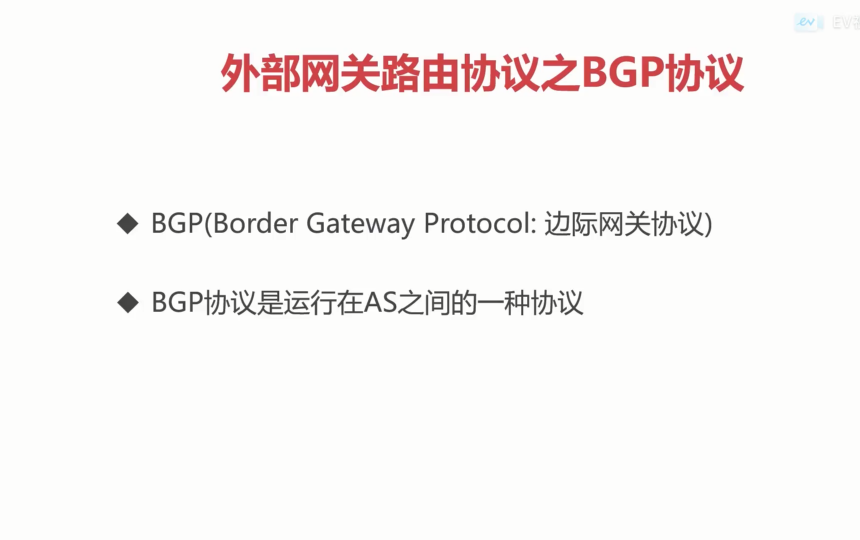

<h1 id="外部网关路由协议之BGP协议"><a href="#外部网关路由协议之BGP协议" class="headerlink" title="外部网关路由协议之BGP协议"></a>外部网关路由协议之BGP协议</h1><h1 id="概念"><a href="#概念" class="headerlink" title="概念"></a>概念</h1><p></p>
<p></p>
<p>考虑到网络特性之外的因素</p>
<h1 id="目的-使用原因"><a href="#目的-使用原因" class="headerlink" title="目的\使用原因"></a>目的\使用原因</h1><ul>
<li>互联网的规模很大</li>
<li>AS内部使用不同的路由协议</li>
<li>AS之间需要考虑除网络特性之外的一些因素</li>
</ul>
<p></p>
<p></p>
<h1 id="示例"><a href="#示例" class="headerlink" title="示例"></a>示例</h1><ol>
<li><p></p>
</li>
<li></li>
</ol>
<p></p>
<h1 id="总结"><a href="#总结" class="headerlink" title="总结"></a>总结</h1><ul>
<li><strong>BGP协议能找到一条到达目的比较好的路由</strong></li>
<li><strong>AS之间通过BGP发言人来进行路由信息的交换</strong></li>
</ul>
<p></p>
